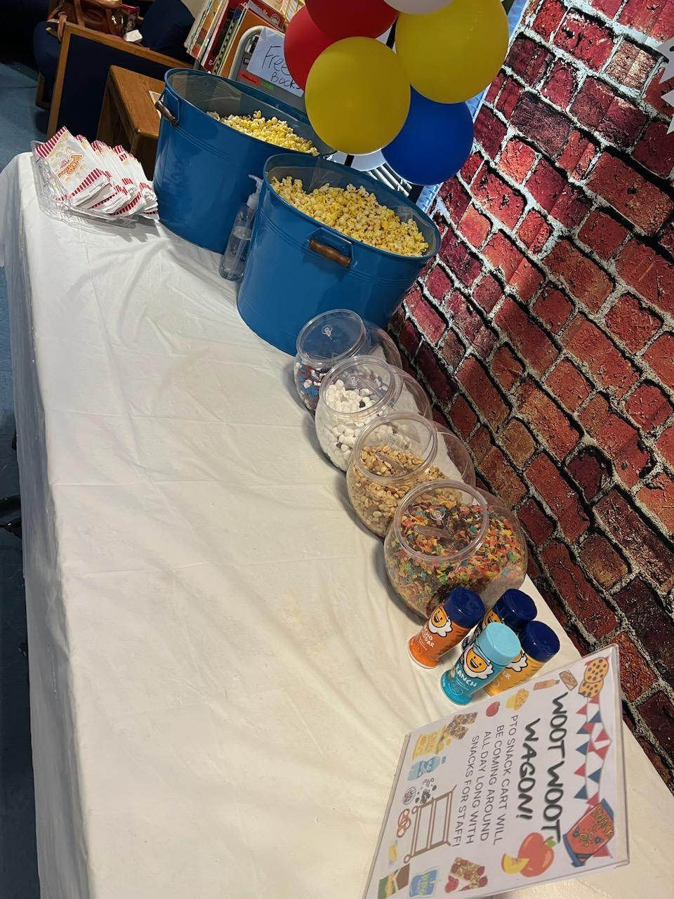

Board Oversight
Independent board provides strategy, reviews financials, and approves major initiatives.
Anchorage Coalition of Community Patrols is organized and operated exclusively for charitable purposes within the meaning of Internal Revenue Code 501(c)(3). EIN: 10144823. Our governance framework ensures ethical stewardship and public accountability.
Independent board provides strategy, reviews financials, and approves major initiatives.
Scopes, eligibility, and outcomes are posted for public review to maintain transparency.

Ongoing training and governance education support continuous improvement.